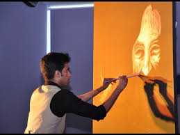

Every artist starts with a first step. This sketch represents the beginning of Vilas Nayak's artistic journey. It reflects his dedication to learning proportions, light, shadow, and facial expressions. From this first artwork, his passion for realistic sketching continued to grow.
⬅ Previous Next ➜